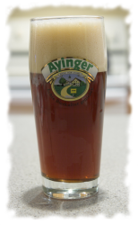
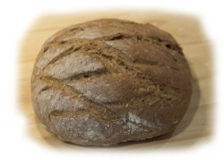

Recipes Various water recipes - These are a collection of water recipes that have worked for me Obergäriges (Ales) Kaiser Alt Weissbier Hell Untergäriges (Lagers)  Dunkel Schwarzbier Maibock Imperator (Doppelbock) Edel Hell (Munich Helles) Food  Treberbrot Brezels and other Laugengebäck Template